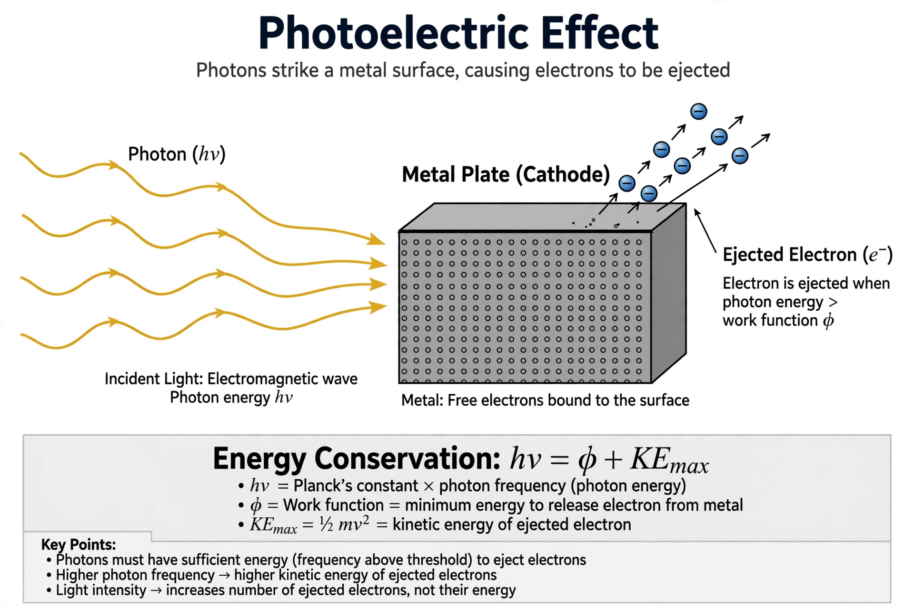

Photoelectric effect

[Image: Diagram of the photoelectric effect: photons striking a metal plate eject electrons]The photoelectric effect is the emission of electrons when electromagnetic radiation, such as light, hits a material. Electrons emitted in this manner are called photoelectrons.
The effect was first observed by Heinrich Hertz in 1887, and its puzzling features — electrons are emitted only above a threshold frequency, and their energies depend on the frequency of the light rather than its intensity — defied explanation by the wave theory of light. In 1905 Albert Einstein explained the effect by proposing that light consists of discrete quanta (later called photons) with energy E = hν, work for which he received the Nobel Prize in Physics in 1921. Robert Andrews Millikan verified Einstein's equation experimentally in 1914–16, while initially seeking to disprove it.
Emission mechanism
A photon striking a material transfers its energy to an electron. If the photon energy hν exceeds the material's work function φ — the minimum energy needed to remove an electron — the electron is emitted with maximum kinetic energy K_max = hν − φ. Photons of lower frequency eject no electrons however intense the beam, while above the threshold the number of electrons emitted is proportional to intensity and each electron's maximum energy grows linearly with frequency.
History
Hertz noticed in 1887 that ultraviolet light facilitated the sparking of his apparatus; Philipp Lenard established by 1902 that the energy of the emitted electrons did not depend on light intensity. Einstein's 1905 paper, one of his annus mirabilis works, introduced the light-quantum hypothesis. Although Millikan's measurements confirmed Einstein's linear equation by 1916, the photon concept was only widely accepted after the Compton effect (1923) demonstrated photon momentum.
Applications
Photoemission underlies photomultiplier tubes, image sensors, solar cells (via the related photovoltaic effect), and photoelectron spectroscopy, a principal tool for measuring the electronic structure of materials. The Einstein relation also provides a direct experimental route to measuring Planck's constant.